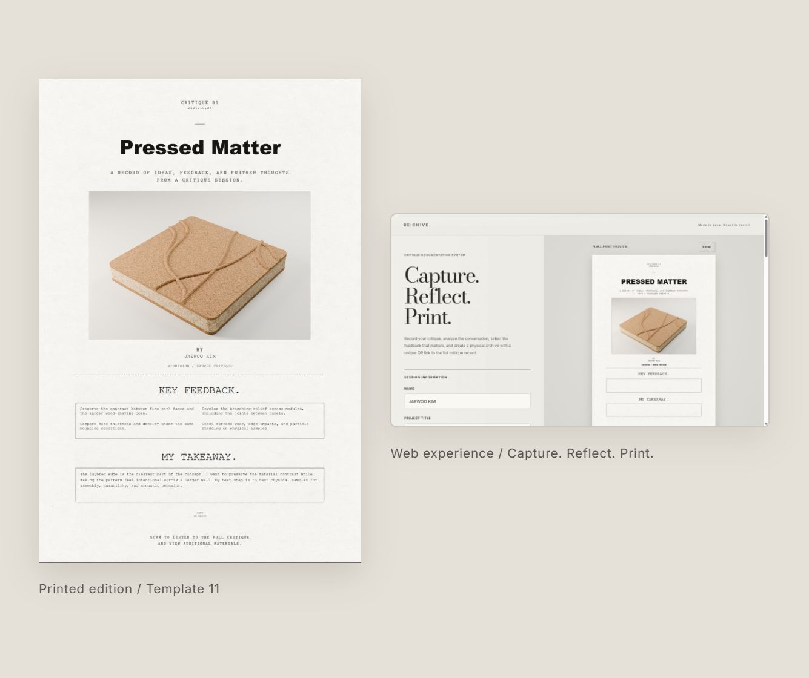
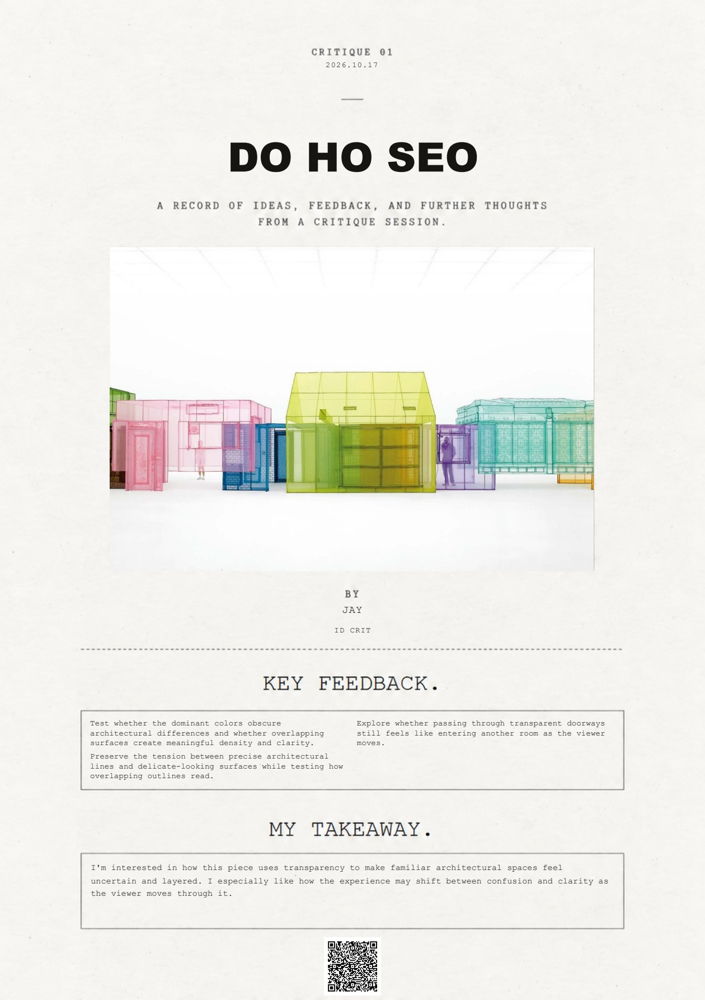
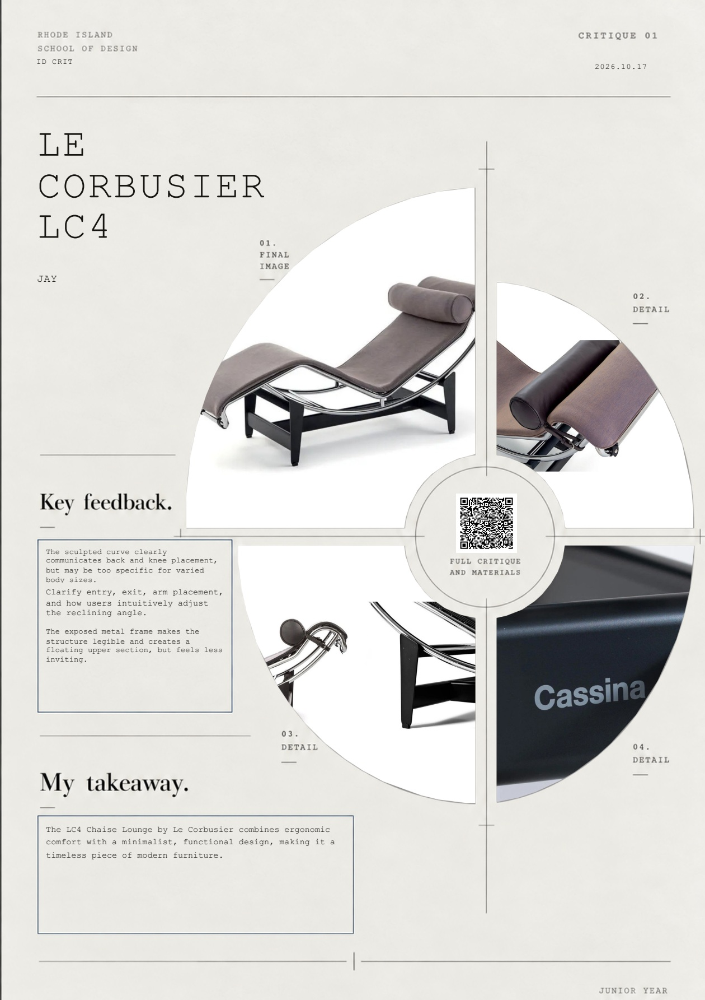
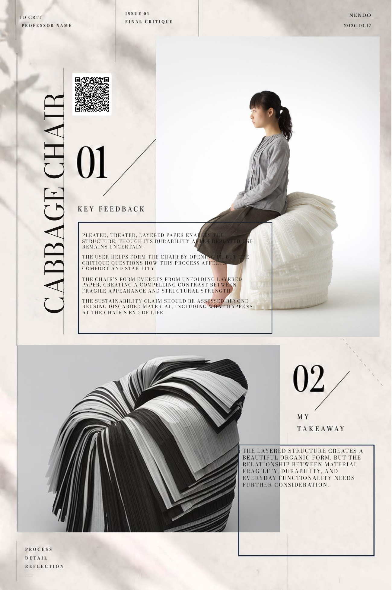
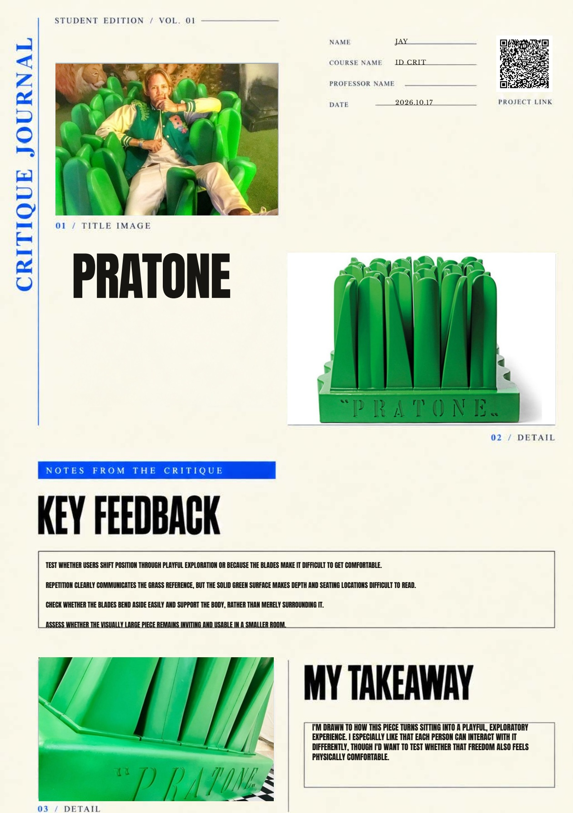
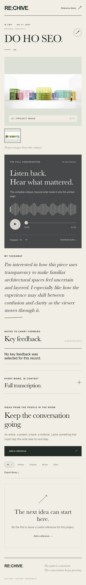

RE:CHIVE
A critique recording and archiving tool that connects spoken feedback, personal notes, and printed project records. Originally developed as CRITIQUE PRINT.

Open Website ↗From conversation to a lasting record
RE:CHIVE brings critique recordings, transcripts, and feedback into a project archive. Students can revisit a discussion and collect the ideas they want to carry into their next iteration.
A connection between print and digital
Choose from 18 print templates and combine project photographs, names, dates, feedback, and personal notes. A QR code connects the printed page to the digital critique archive and its materials.
Workflow
Record a critique, review the transcript and feedback, add personal notes, and arrange the project in a print template. Keep the printed record alongside the work and return to the archive through its QR code.
One conversation. Different editions.
Example layouts showing project images, key feedback, personal notes, and a QR link to the digital archive.




Scan. Listen. Revisit.
The QR code connects the printed edition to a digital archive with project images, the critique recording, personal takeaways, and references.
Full mobile archive view opened from an example QR code.
